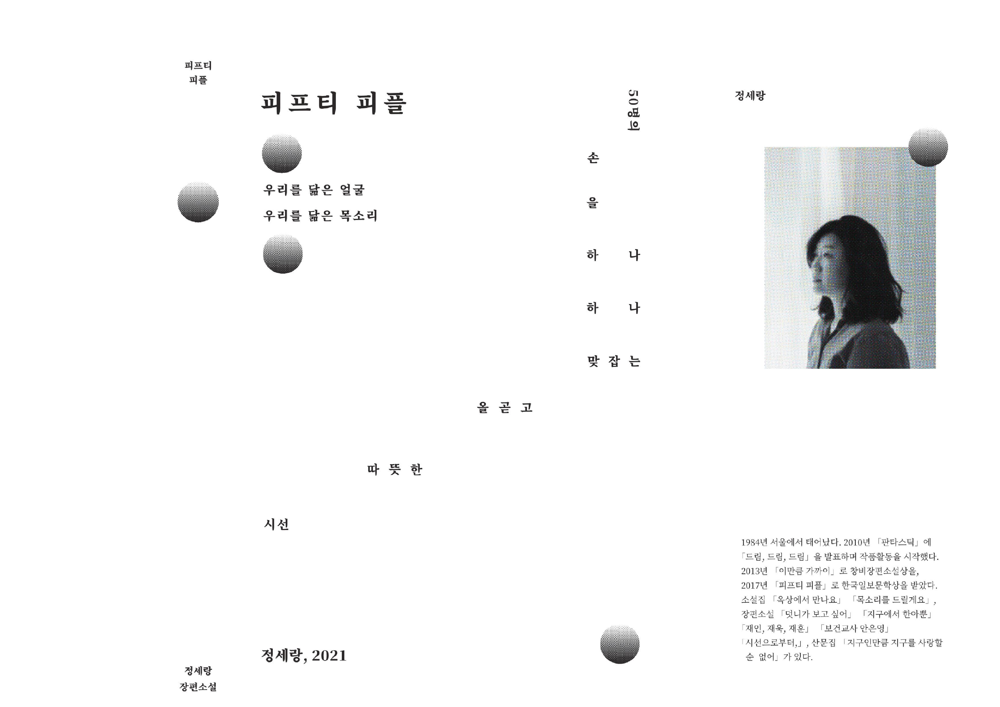
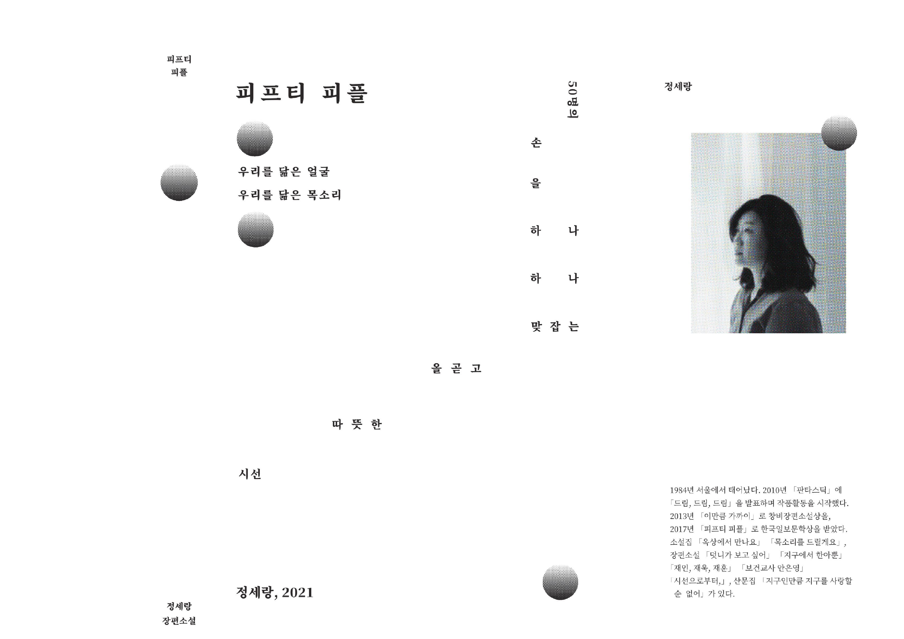

2023
[피프티피플 북커버 리디자인]
risograph printing
172 * 245
정세랑 작가의 ‘피프티 피플’ 북커버를 리디자인했습니다.
타이포그래피 수업의 타이포만을 사용해야 한다는 제시 조건에 맞춰
표지의 앞면과 뒷면이 자연스럽게 이어지는 타이포그래피 레이아웃을 작업했고,
책을 고를 때마다 작가의 말을 읽는 습관을 떠올려 북커버의 날개에
작가의 말을 삽입해보는 시도를 했습니다.
또한 소설이 50명의 이야기를 이어가는 구조라는 점에 착안해 사람을 하나의 원으로 비유했습니다.
이 원들이 서로 이어지는 모습과 소설 속 50명의 이야기가 연결되는 모습이 닮았다는 생각을
시각적으로 표현하고자 했습니다.
exibition pic¸¸♪